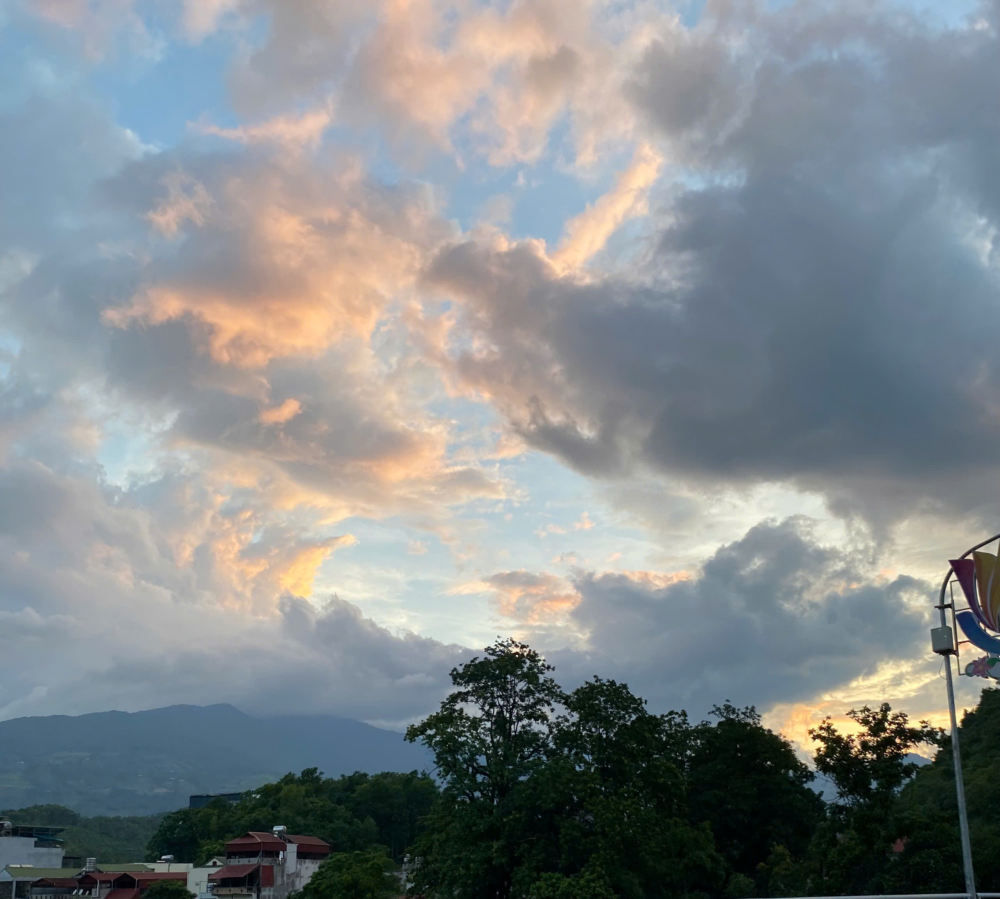
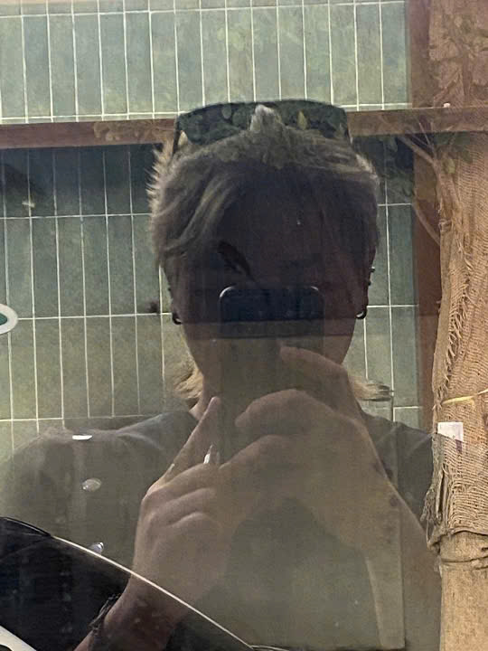

Sinh ra ở một buổi chiều cuối tháng 7
Tớ sinh lúc 16:15 ngày 29/7/2005. Tớ quê ở Tuyên Quang nhưng sống ở Hà Giang, hiện tại sống một mình.


Sinh lúc 16:15 - 29/7/2005
Một trang nhỏ để kể về tớ: có bầu trời khá sử thi, có nhạc cụ, có vài đoạn trưởng thành hơi lộn xộn, và có chút cợt nhả cho đời đỡ nghiêm trọng quá mức.
Tớ tự kể về mình
Tớ sinh lúc 16:15 ngày 29/7/2005. Tớ quê ở Tuyên Quang nhưng sống ở Hà Giang, hiện tại sống một mình.
Tớ thích nấu ăn, chơi nhạc cụ, hát, chơi game và thích việc được ôm ngủ. Tớ cũng khá ngại việc chụp ảnh có mặt vì luôn tự ti với vẻ ngoài. Tuy thích hát nhưng tớ cảm thấy mình hát vẫn chưa tốt, vì các anh chị ở nhà bảo tớ hát sai kĩ thuật mất rồi.
Năm 4 tuổi tớ chuyển về ở với ông bà nội. Đó là khoảng thời gian tớ được ông nội rèn dũa, uốn nắn kĩ càng. Dù có ông bà nội ngoại là giáo viên nhưng tớ học rất kém, là tớ thấy vậy. Nhà tớ cũng nhiều anh chị em nên tớ được chiều, nhưng người chăm tớ nhiều nhất là chị gái con bác hai.
Năm 9 tuổi tớ lại chuyển về ở với bố mẹ nhưng sống xa nhà để đi học. Năm 11 tuổi tớ khá nghịch ngợm nên đến khi 12 tuổi tớ chuyển về sống cùng bố mẹ. Đó là khoảng thời gian tớ không thích lắm vì bị đánh đòn khá nhiều.
Âm nhạc và thể thao
Tớ được học piano năm 8 tuổi nhưng lúc đó tớ chưa đủ trưởng thành để nhận ra lợi ích của nó.
Những năm tháng ở cạnh ông nội đã giúp tớ chơi cầu lông rất tốt, để đến năm lớp 9 tớ có thể chơi theo kịp vận động viên chuyên nghiệp của tỉnh.
Năm lớp 8 tớ quyết định học chơi guitar và được bố mua cho cây đàn đầu tiên. Cây đàn dù có thế nào tớ cũng không bán.
Tớ biết chơi thêm trống sau khóa bổ túc đợt tết của anh tớ năm lớp 8 và quá trình tự gõ vào bàn để chắc nhịp. Lên đại học tớ còn được học thêm đàn nguyệt.
Kể chuyện của tớ
Năm tớ học xong lớp 9, tớ quyết định thi chuyên. Tớ dành ra hai tuần để học cật lực và may mắn đỗ chuyên, mặc dù chỉ là đỗ vớt vào lớp kém nhất.
Tớ tiếp tục dành ra ba năm đi học xa nhà và về nhà ít hơn. Trong khoảng thời gian đó tớ cũng có một mối tình và chẳng đi đến đâu.
Tớ bắt đầu hút thuốc ở cấp ba vì những vấn đề mà tớ gặp phải. Tớ không mong người yêu tương lai sẽ tự ép bản thân chấp nhận việc tớ hút thuốc vì tớ biết nó cũng chẳng tốt đẹp gì.
Tớ không thân với bố mẹ cho lắm dù biết bố mẹ rất thương tớ. Có lẽ là do tớ đã sống xa bố mẹ khá lâu và tớ có thể tự lập được.
Năm lớp 11 tớ bắt đầu bị đau đầu, có lẽ đây là một trong số những lý do khiến tớ hút thuốc.
Mọi thứ cứ yên bình để tớ bước vào năm cuối cấp, tớ cũng tự mua được cây guitar điện của riêng mình.
Tớ thi tốt nghiệp khá chill, một phần vì điểm học bạ của tớ cao, đủ để đỗ trường tớ muốn rồi, một phần là vì tớ cũng chẳng có tham vọng gì. Hai ngày thi cũng khá vui, mẹ đã dành thời gian để đưa đón tớ đi thi. Tớ cũng có chụp được một bức ảnh bầu trời mà tớ bảo là khá sử thi vào chiều tối hôm thi môn toán.
Tớ vào đại học, trải qua khá nhiều sóng gió nhưng đến giờ tớ vẫn chẳng biết tại sao mình vẫn sống, có lẽ là mạng tớ lớn. Tớ cũng có thêm bạn mới và đón nhận một cuộc sống mới dù mọi việc chẳng suôn sẻ lắm.
Cuộc sống hàng ngày của tớ
Tớ thích chọn đồ màu đen, nhìn hợp mắt là được.
Tớ cảm thấy mình giống một con mèo cam vì mọi người bảo tớ khùng khùng điên điên.
Mọi người cũng bảo tớ trông hơi khó gần. Tớ để tóc mullet và khá hay làm trò vì tớ thấy như thế khá vui.
Tuyên Quang - 16:15 - 29/7/2005
Mặt Trời Sư Tử, Mặt Trăng Kim Ngưu, Cung Mọc Ma Kết ước tính.
Các vị trí chiêm tinh được tính theo giờ Việt Nam UTC+7, nơi sinh Tuyên Quang. Đây là phần tham khảo vui, không phải kết luận đóng dấu đỏ về con người tớ.
Gu người yêu
Tớ không muốn người yêu tương lai phải tự ép bản thân chấp nhận việc tớ hút thuốc, vì tớ biết điều đó không tốt đẹp gì. Một mối quan hệ ổn nên bắt đầu bằng sự thật, sự tử tế, và một chút cợt nhả cho đỡ căng.